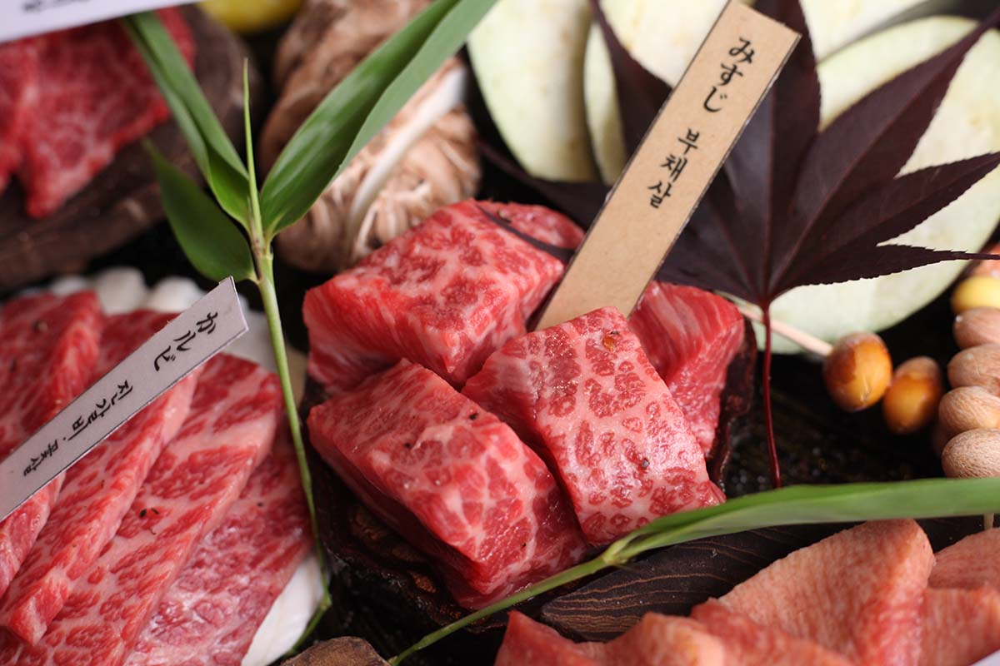
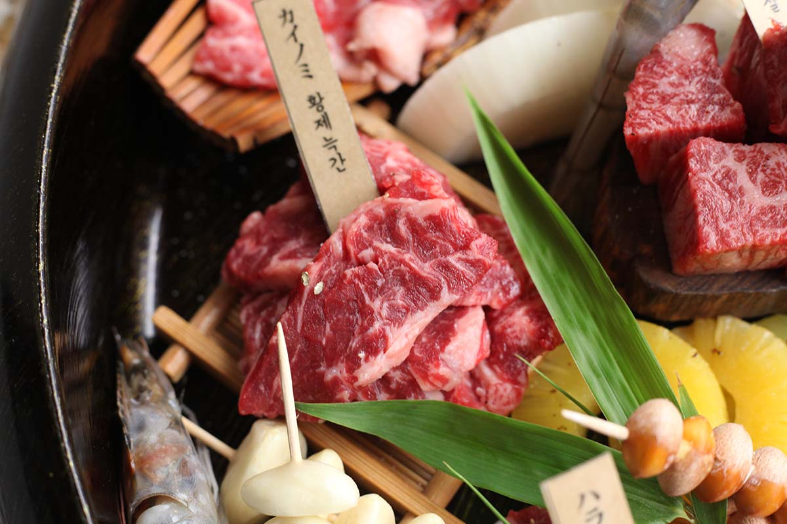
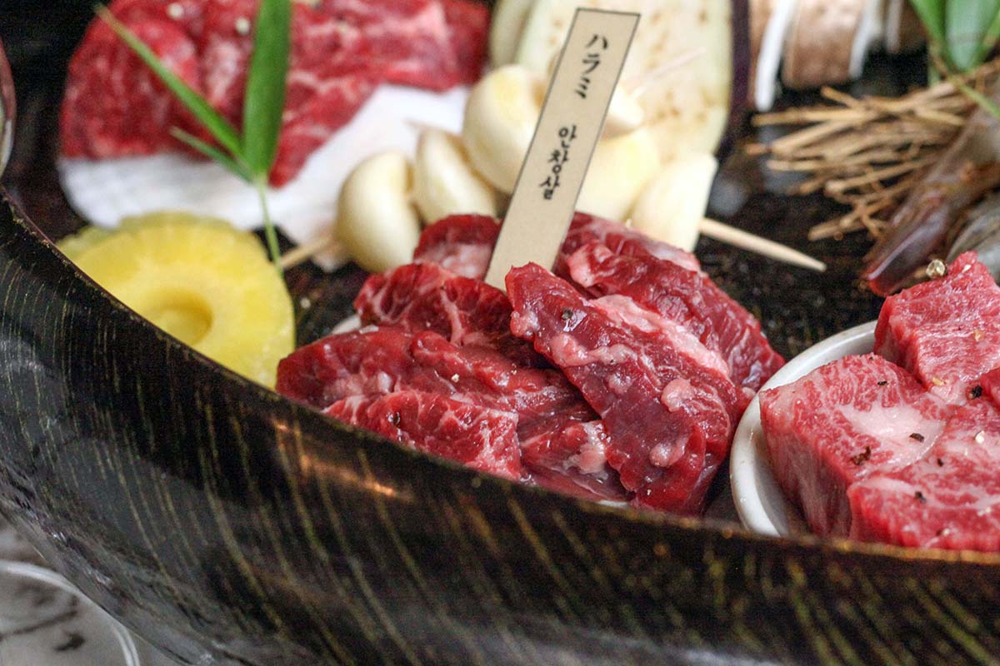
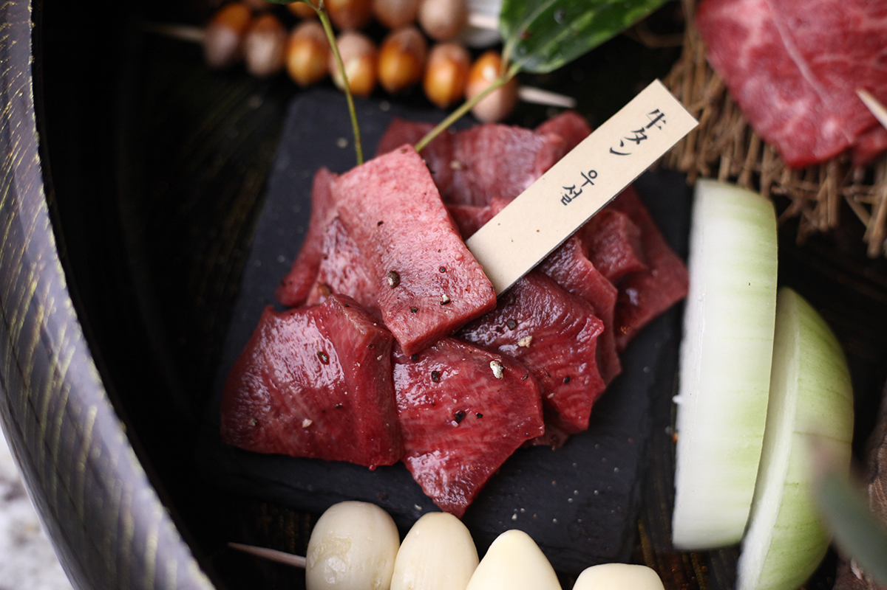
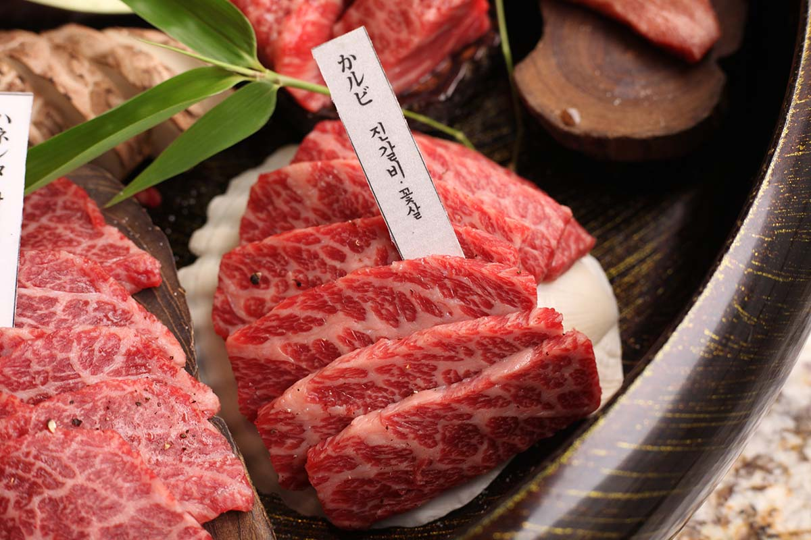
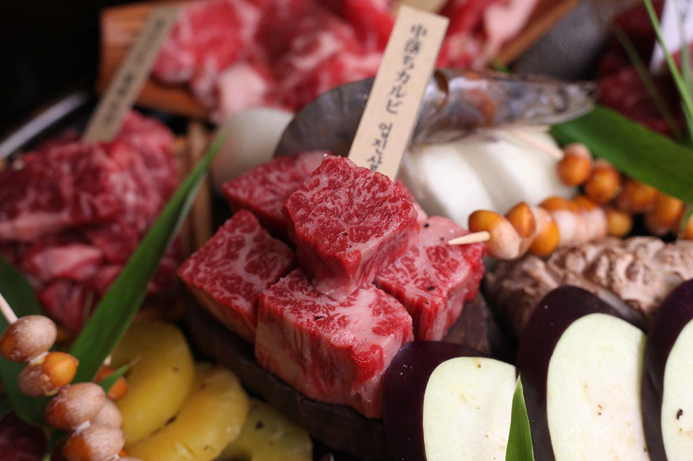
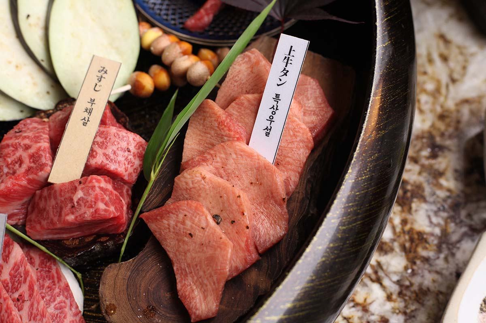
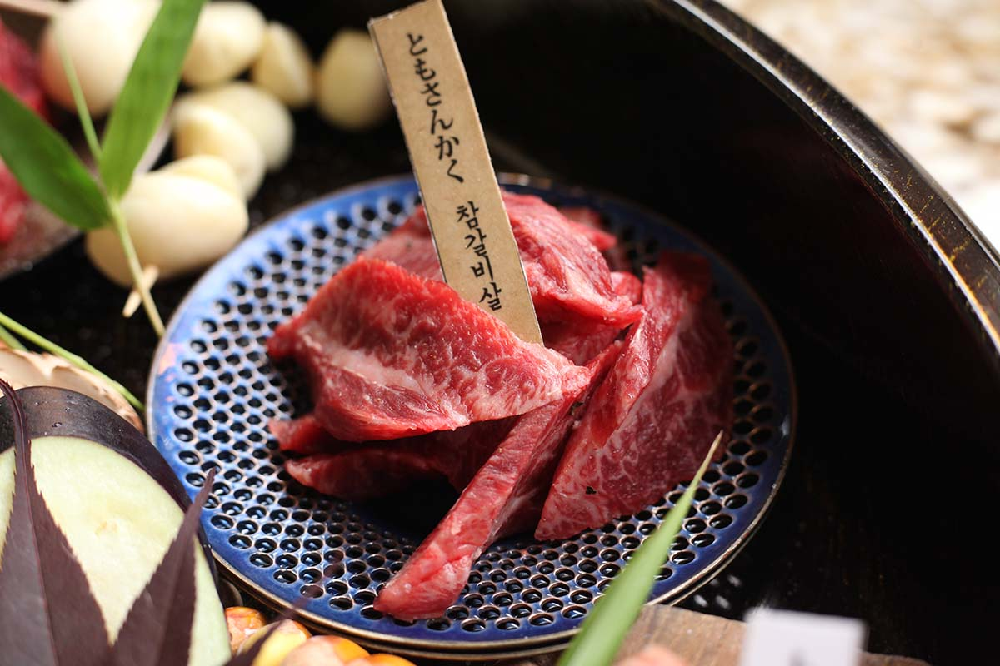
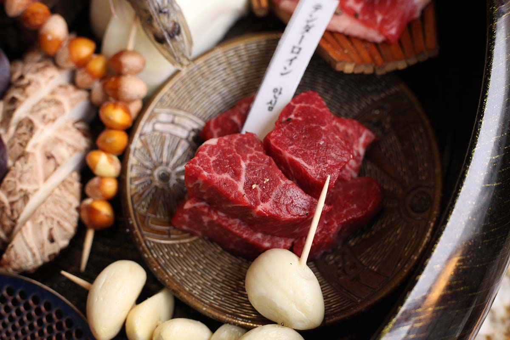
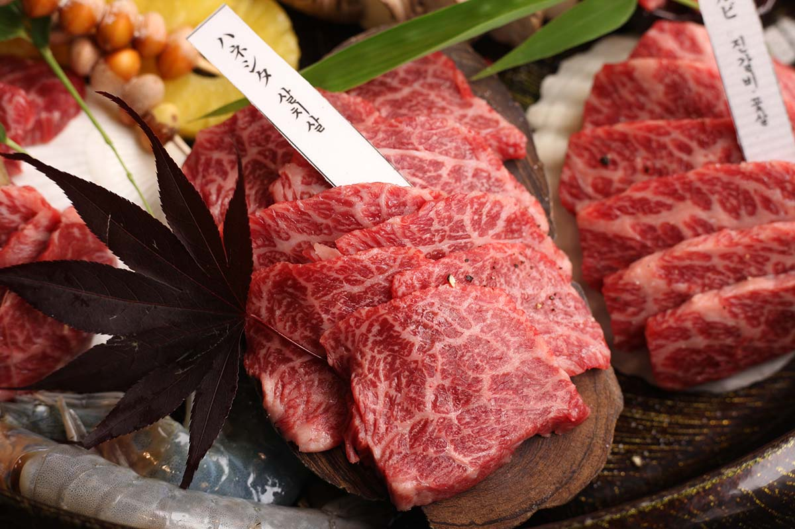

- 
- 부채살 ( みすじ | 미스지 )80g / 9000원
- 어깨뼈가 부채 모양으로 생겼기 때문에 ‘부채살’이라고 하며, ‘슬라이스한 모습이 마치 낙엽 같다고 해서 ’낙엽살’이라 부르기도 한다.
맛이 담백하고 쫄깃하며 육즙이 풍부한 것이 특징이다.
- 
- 황제늑간 ( カイノミ | 카이노미 )80g / 11000원
- 갈비부위의 양쪽 끝에 있는 척추와 가슴 부위로 소 한마리에서 600g정도 나와 황제늑간이라 한다.
- 
- 안창살 (ハラミ | 하라미 )80g / 13500원
- 갈비뼈 7번과 13번 사이 안쪽에 붙어 있는 두꺼운 횡경막 부위로 토시살과 함께 내장을 붙들고 있는 근육으로
쫄깃하게 씹히는 촉감과 독특한 단맛을 가지고 있으며, 담백하고 육즙이 풍부한 것이 특징이다.
- 
- 우설 ( 牛タン | 규탄 )80g / 14500원
- 약 1.2kg~1.5kg으로 단백질의 함량이 높고 비타민이나 철분을 많이 함유. 지방이 적어 다이어트에 적합하며 육질이 연하고 담백하다.
- 
- 진갈비 (꽃살) ( かルビ | 카루비 )80g / 17500원
- 제6갈비뼈 ~ 제8갈비뼈 부위의 고기로, 운동량이 거의 없는 근육들로 구성되어 근내지방의 축적이 매우 잘 이루어진 환상적인 마블링을 자랑.
- 
- 업진살 (中落ちカルビ | 소뱃살)80g / 19500원
- 업진살은 소가 엎드렸을 때 바닥에 닿는 뱃살로 질기지 않고 근육 사이의 근간지방이 많아 구워 먹으면 풍미와 육즙이 매우 좋다.
- 
- 특상우설 ( 上牛タン | 죠우규탄 )6pc / 22500원
- 우설중에서 엄선한 특상부위
- 
- 참갈비살 ( ともさんかく | 토모상카쿠)80g / 25500원
- 제9갈비뼈에서 제13갈비뼈까지의 부위로, 전체적인 고기의 맛은 꽃등심과 양지의 중간 정도이다.
- 
- 안심 ( テンダーロイン | 텐더로인 )80g / 26500원
- 쇠고기 중 가장 부드럽고 연하며 지방이 적고 담백하며 맛이 좋아 최고급으로 취급되는 부위.
- 
- 살치살 ( ハネシタ | 하네시타 )80g / 28500원
- 등심살의 일부로 최상급인 꽃등심을 얻기 위해 갈비와 분리한 살코기이며, 마블링이 가장 좋고 구이용으로는 최고의 부위.
- 부채살
- 황제늑간
- 안창살
- 우설
- 진갈비
- 업진살
- 특상우설
- 참갈비
- 안심